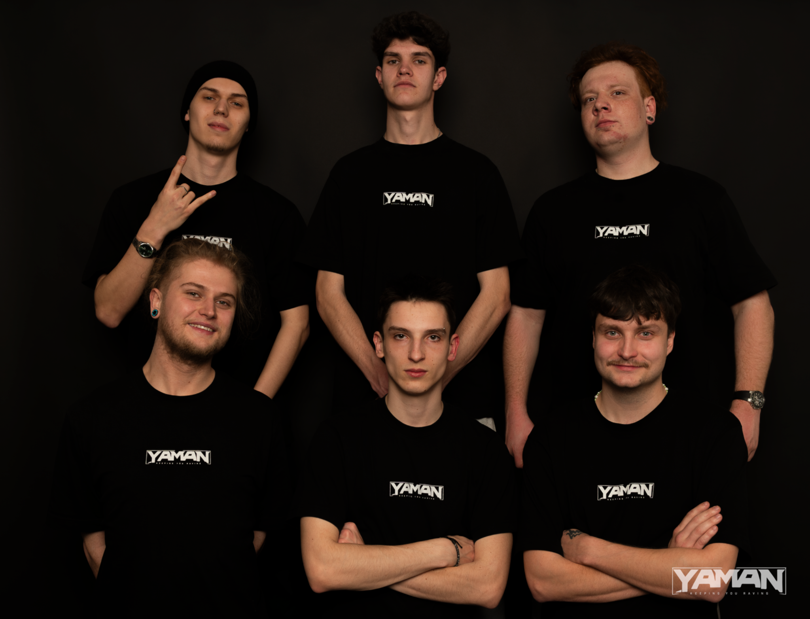

Crew & IdentitaCrew & Identity
YAMAN Sound spojuje neurofunk, rave energii a vlastní vizuální identitu.YAMAN Sound connects neurofunk, rave energy and its own visual identity.
Label

YAMAN je pražský drum and bass kolektiv, který tvoří fresh underground raves a podporuje lokální bass music scénu. YAMAN is a Prague-based drum and bass collective delivering fresh underground raves and supporting the local bass music scene.

YAMAN Sound spojuje neurofunk, rave energii a vlastní vizuální identitu.YAMAN Sound connects neurofunk, rave energy and its own visual identity.

Temný klubový look, stage design a industriální warehouse atmosféra.Dark club aesthetics, stage design and industrial warehouse atmosphere.